00:03我记得我第一次学习向量化的时候，我在电脑上花了好几个小时，先是运行一个未向量化的算法版本，看看它运行多久，然后再运行代码的向量化版本，看看它又快了多少。
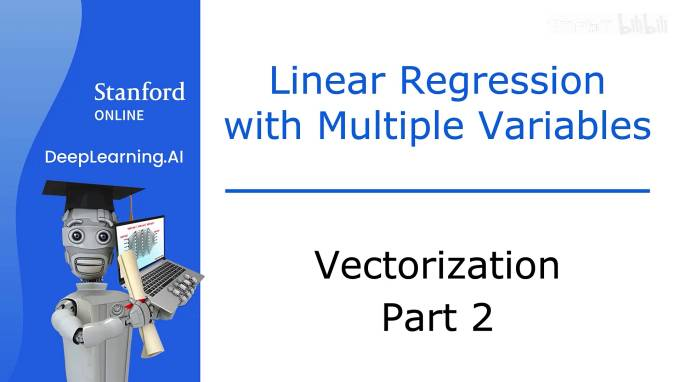
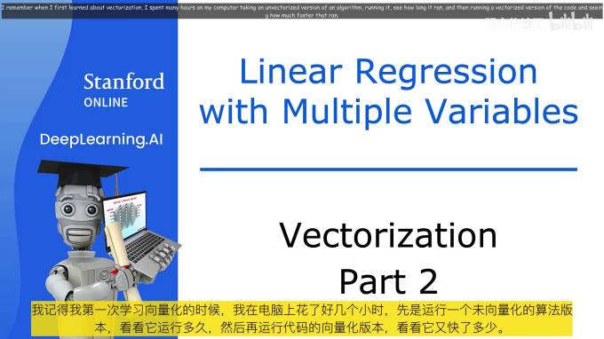
00:20我只是花了几个小时摆弄这个，而它让我大为震惊，同一个算法向量化后竟能跑得如此之快。
00:30这对我来说几乎就像一个魔法把戏。
00:33在本视频中，我们来弄清楚这个魔法把戏究竟是如何运作的。
00:39让我们更深入地了解，向量化实现是如何在你的电脑背后工作的。
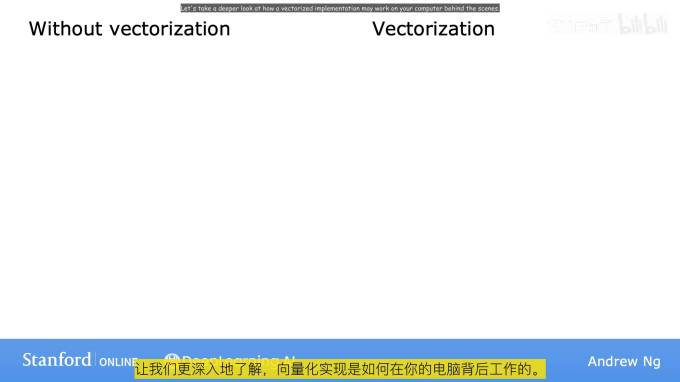
00:45我们来看这个 for 循环。
00:47像这样的 for 循环在没有向量化的情况下运行。
00:52所以如果 j 的范围从零到，比如说十五，这段代码会一个接一个地执行操作。
01:01在第一个时间步，我将它记为时间零或 t 零，它首先对索引为零的值进行操作。
01:11在下一个时间步，它计算对应索引为一的值，以此类推，直到第十五步，它完成了那步计算。
01:22换句话说，它一次一步、一步接一步地执行这些计算。
01:30相比之下，NumPy 中的这个函数是在计算机硬件中以向量化方式实现的。
01:38因此，计算机可以获取向量 w 和 x 的所有值，在单一步骤中，它同时并行地将每一对 w 和 x 相乘。
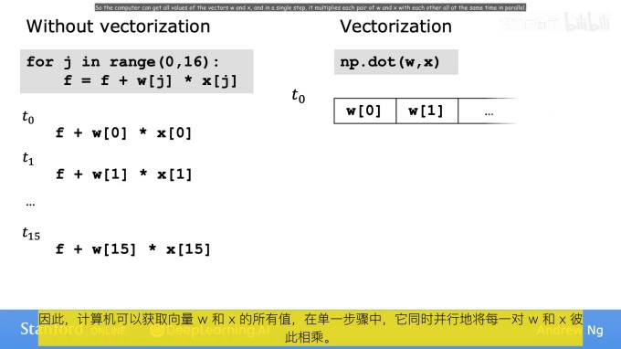
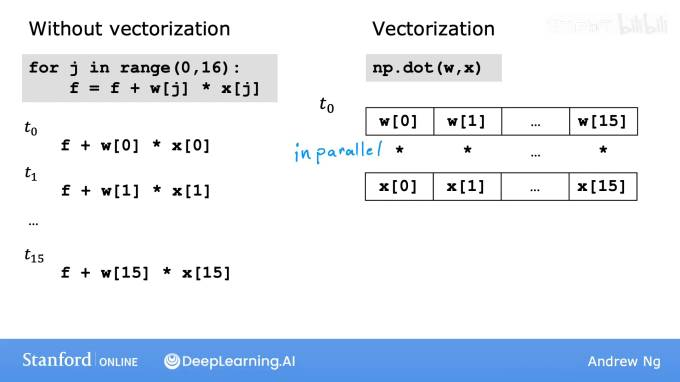
01:51在那之后，计算机取得这十六个数字，并使用专门的硬件非常高效地将它们全部加总起来，而不是需要一个接一个地执行不同的加法来累加这十六个数字。
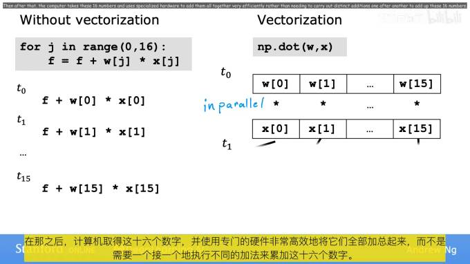
02:07这意味着带有向量化的代码能在比没有向量化的代码少得多的时间内完成计算。
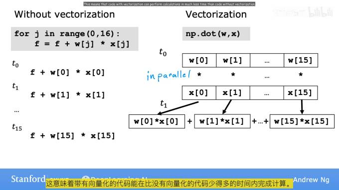
02:16而当你在大数据集上运行学习算法或尝试训练大型模型时，这点就更加重要，而这通常是机器学习中的情形。
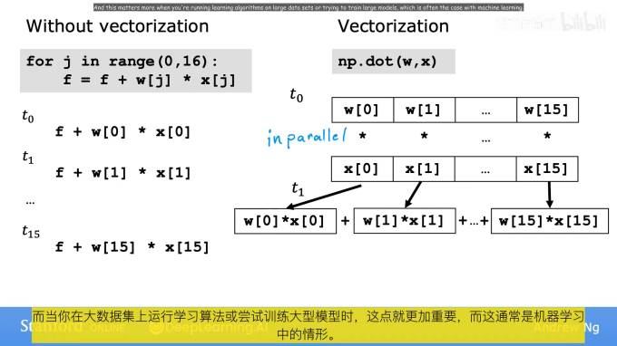
02:27所以这就是为什么能够写出学习算法的向量化实现，是让学习算法高效运行、并因此能很好地扩展到许多现代机器学习算法如今必须处理的大数据集上的关键一步。
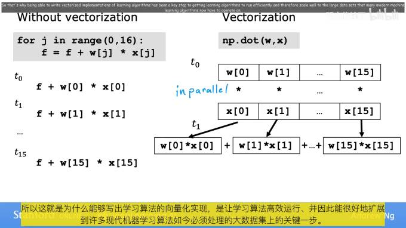
02:43现在，让我们来看一个具体的例子，说明这如何有助于实现多元线性回归，即具有多个输入特征的线性回归。
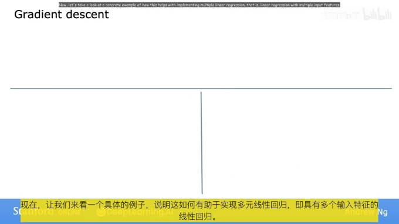
02:54假设你有一个包含十六个特征和十六个参数 w 一到 w 十六的问题，此外还有参数 b。
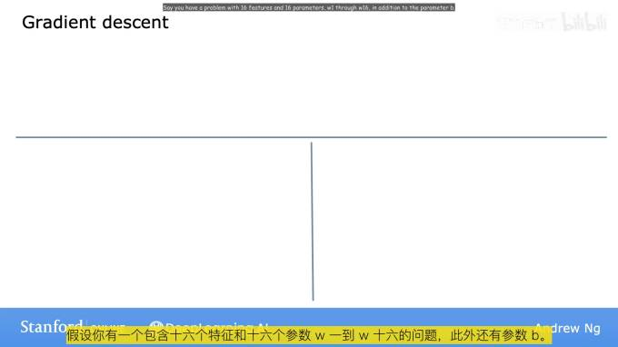
03:06你为这十六个权重计算了十六个导数项。
03:11在代码中，也许你将 w 和 d 的值存储在两个 NumPy 数组中，其中 d 存储导数的值。
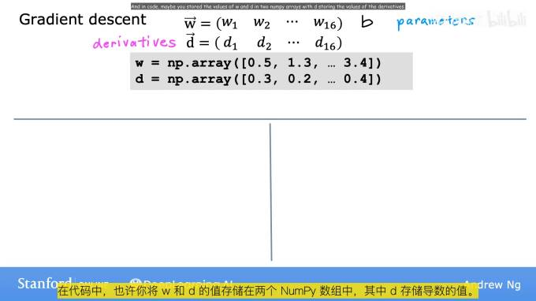
03:21对于这个例子，我将暂时忽略参数 b。
03:26现在，你想为这十六个参数中的每一个计算更新。
03:31所以，对于 j 从一到十六，wj 被更新为 wj 减去学习率，比如零点一，在代码中，如果没有向量化，你会做类似这样的事。
03:52更新 W 一为 W 一减去学习率零点一乘以 D 一，接着类似地更新 W 二，以此类推直到 W 十六，更新为 W 十六减去零点一乘以 D 十六。
04:10在代码中，如果没有向量化，你可以用像这样的一个 for 循环，for j in range(0, 16)，设 wj 等于 wj 减去零点一乘以 dj。
04:28相比之下，有了向量化，你可以把计算机的并行处理硬件想象成这样，它取向量 w 中的所有十六个值，并并行地减去零点一乘以向量 d 中的所有十六个值，并在同一步骤中，同时将全部十六个计算结果赋回给 W。
04:54在代码中，你可以这样实现：w 被赋值为 w 减去零点一乘以 d。
05:04在幕后，计算机取这些 NumPy 数组 W 和 d，并使用并行处理硬件高效地执行所有十六次计算。
05:15所以，使用向量化实现，你应该会得到一个高效得多的线性回归实现。
05:22如果你只有十六个特征，速度差异也许不会很大，但如果你有成千上万个特征以及可能非常大的训练集，这种向量化实现将在你的学习算法的运行时间上产生巨大差异。
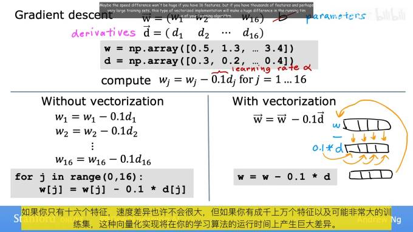
05:39这可能是代码在一两分钟内完成，还是花费很多很多小时做同样事情的区别。
05:52在这个视频之后的选修实验中，你会看到对机器学习中最常用的 Python 库之一的介绍，这个库我们在本视频中已经提及，叫做 NumPy。
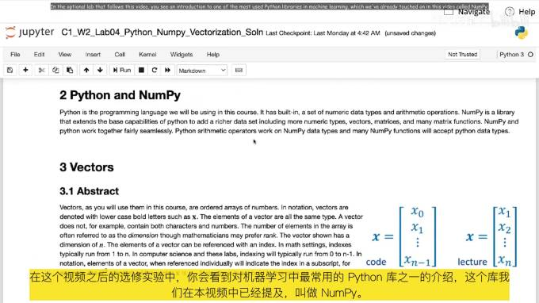
05:59你将看到如何在代码中创建向量，这些向量或数字列表被称为 NumPy 数组。
06:07你也将看到如何使用一个叫做 dot 的 NumPy 函数来取两个向量的点积。
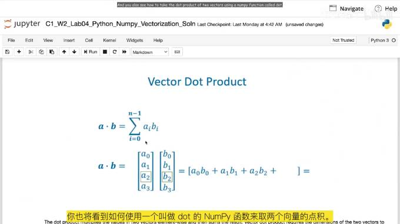
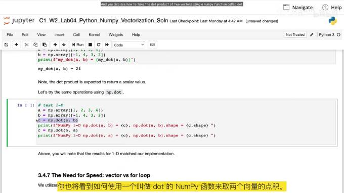
06:15你还会看到向量化后的代码，比如使用 dot 函数，如何能比 for 循环跑得快得多。
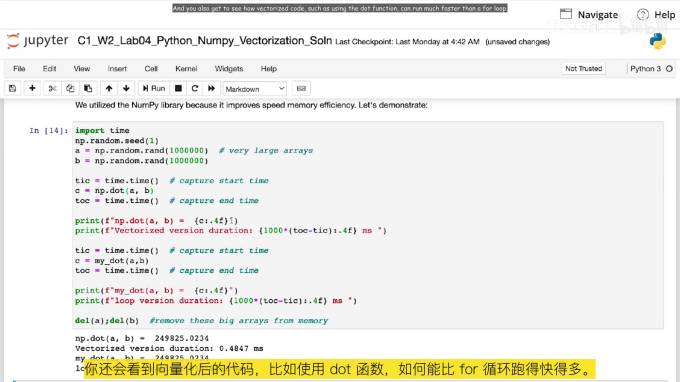
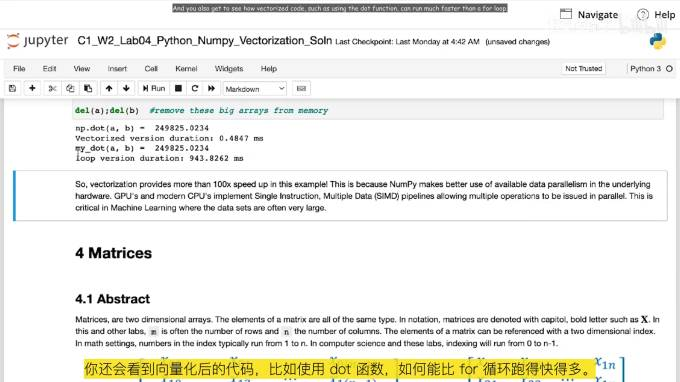
06:24事实上，你将亲自为这些代码计时，并有望看到它运行得更快。
06:31这个选修实验介绍了相当多的新 NumPy 语法。
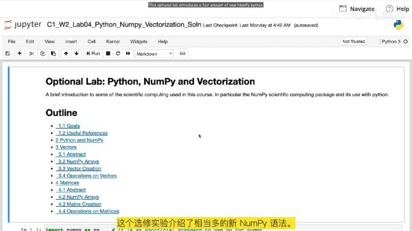
06:36所以当你阅读这个选修实验时，请不要觉得你必须立刻理解所有代码，但你可以保存这个，并在处理存储在 NumPy 数组中的数据时，把它当作一份参考资料来查看。
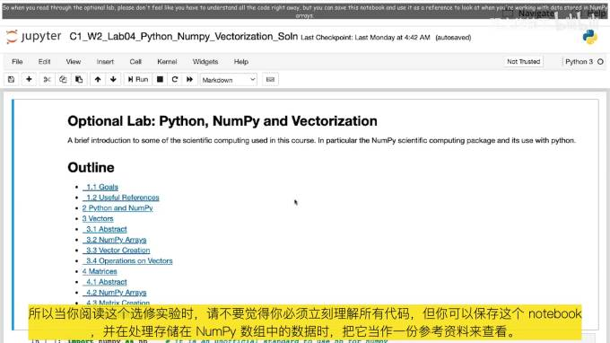
06:51那么，恭喜你完成了这个关于向量化的视频。
07:05你已经学习了实现机器学习算法中最重要也最有用的技巧之一。在下一个视频中，我们将把多元线性回归的数学与向量化结合起来，以便你用向量化为多元线性回归实现梯度下降。
07:12让我们进入下一个视频。